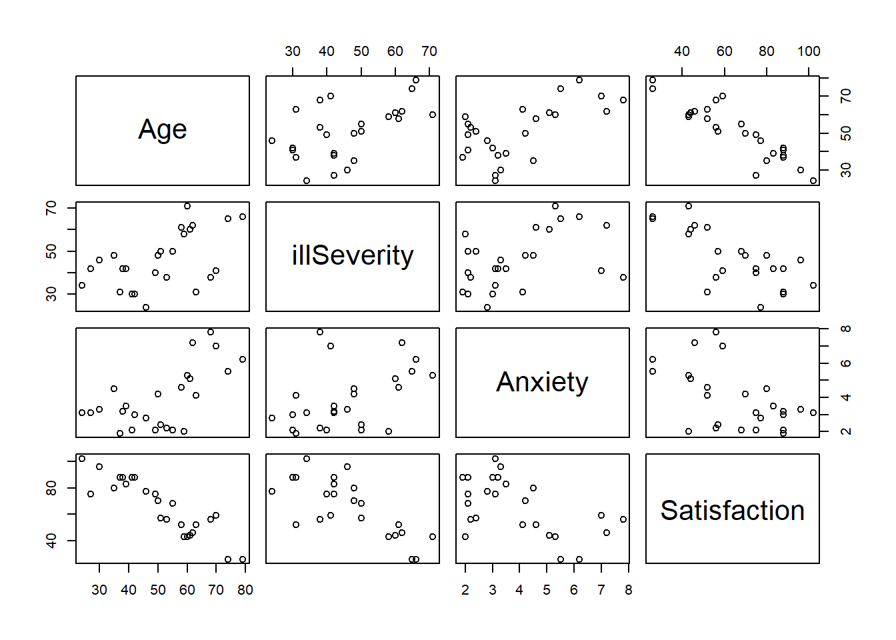
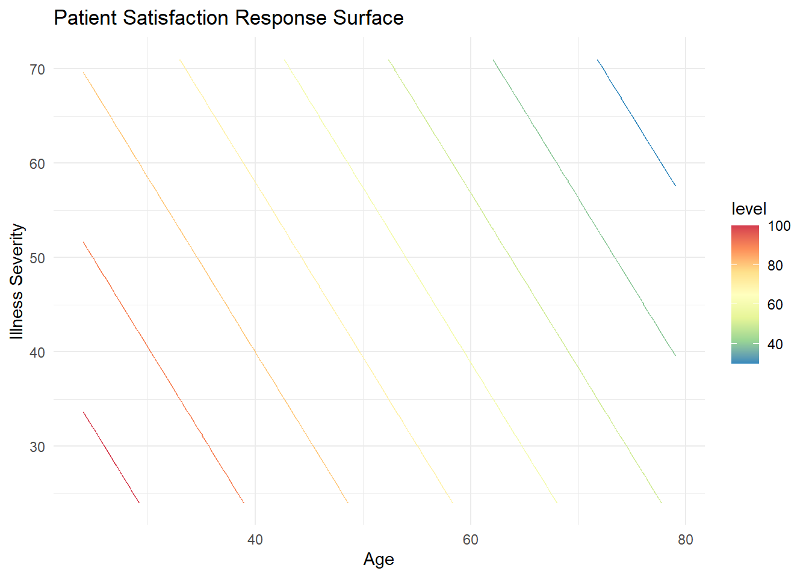
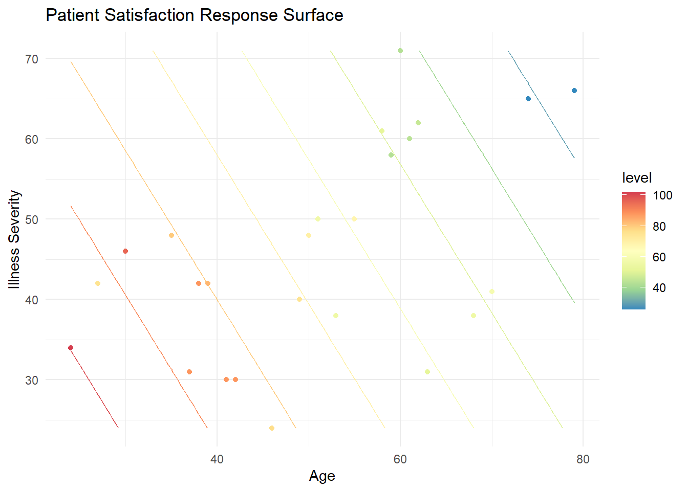
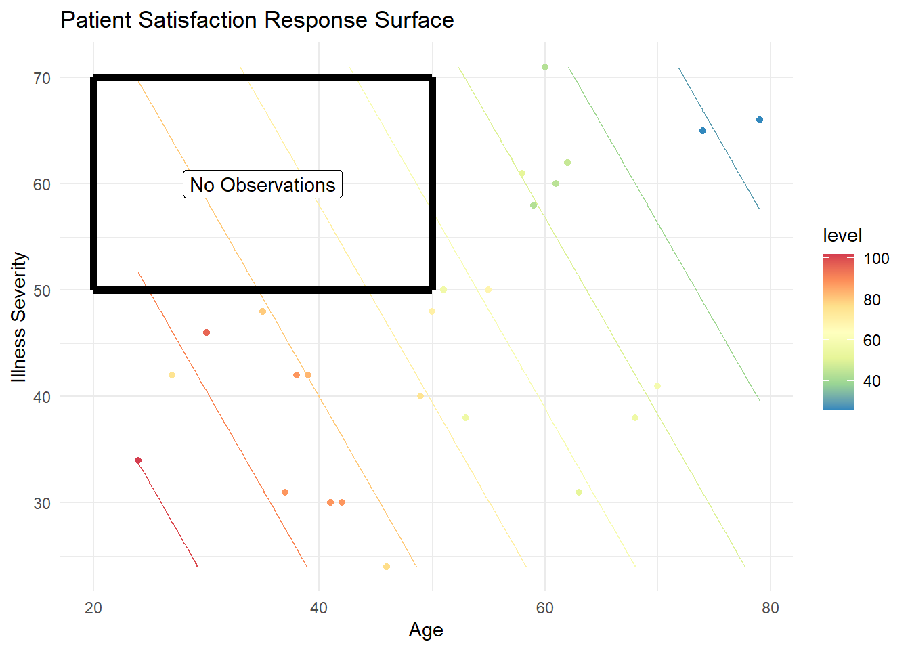
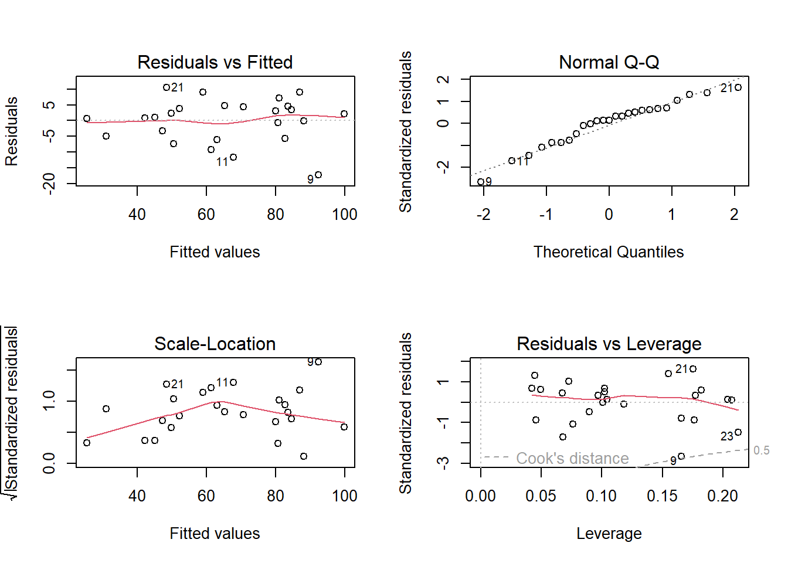
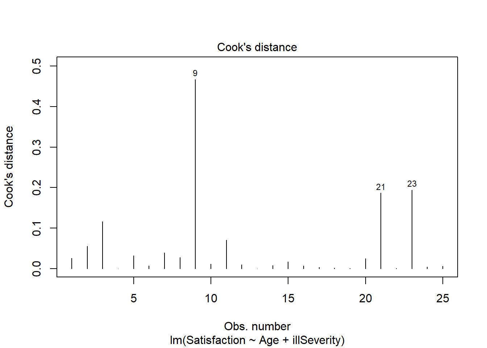

Multiple Linear Regression
In the previous section we considered just one predictor and one response. The linear model can be expanded to include multiple predictors by simply adding terms to the equation:
\[y = \beta_{0} + \beta_{1}x_{1}+ \beta_{2}x_{2} + ... + \beta_{(p-1)}x_{(p-1)} + \varepsilon\]
With one predictor, least squares regression produces a regression line. With two predictors, we get a regression plane (shown below), and so on up to a \((p-1)\) dimensional hyperplane.
Linear Algebra Solution
With two or more predictors, we can’t solve for the linear model coefficients the same way we did for the one predictor case. Solving for the coefficients (the \(\beta\)s) requires some linear algebra. Given a data set with \(n\) observations and one predictor, the \(y\) (response), \(X\) (predictor), and \(\beta\) (coefficient) matrices are written as:
\[y= \begin{pmatrix} y_1 \\ \vdots \\ y_n \end{pmatrix} , X= \begin{pmatrix} 1 & x_1 \\ \vdots & \vdots \\ 1 & x_n \end{pmatrix}, \beta= \begin{pmatrix} \beta_0 \\ \beta_1 \end{pmatrix}\]
Incorporating the error term, we have:
\[\varepsilon= \begin{pmatrix} \varepsilon_1 \\ \vdots \\ \varepsilon_n \end{pmatrix} = \begin{pmatrix} y_1-\beta_0-\beta_1x_1 \\ \vdots \\ y_n-\beta_0-\beta_1x_n \end{pmatrix} = y-X\beta\]
Once we solve for the coefficients, multiplying them by the predictors gives the estimated response, \(\hat{y}\).
\[X\beta \equiv \hat{y}\]
With multiple linear regression, we expand the \(X\) and \(\beta\) matrices accordingly.
\[y= \begin{pmatrix} y_1 \\ \vdots \\ y_n \end{pmatrix} , X= \begin{pmatrix} 1 & x_{11} & \ldots & x_{1p-1} \\ \vdots & \vdots & \ddots & \vdots \\ 1 & x_{n1} & \ldots & x_{np-1} \end{pmatrix}, \beta= \begin{pmatrix} \beta_0 \\ \vdots \\ \beta_{p-1} \end{pmatrix}\]
Incorporating error:
\[\varepsilon= \begin{pmatrix} \varepsilon_1 \\ \vdots \\ \varepsilon_n \end{pmatrix} = \begin{pmatrix} y_1-(\beta_0-\beta_1x_{11} + \ldots + \beta_{p-1}x_{1p-1}) \\ \vdots \\ y_n-(\beta_0-\beta_1x_{n1} + \ldots + \beta_{p-1}x_{np-1}) \end{pmatrix} = y-X\beta\]
However, notice that the final equation remains unchanged.
\[X\beta \equiv \hat{y}\]
The residual sum of squares (RSS) also remains unchanged, and so do the other equations that have RSS as a term, such as residual standard error and \(R^2\). The following is an example of solving the system of equations for a case with two predictors and no error. Given \(n=4\) observations, we have the following system of equations:
\[x_0 = 10\] \[x_0 + x_2 = 17\] \[x_0 + x_1 = 15\] \[x_0 + x_1 + x_2 = 22\]
In this example, we technically have all of the information we need to solve this system of equations without linear algebra, but we’ll apply it anyway to demonstrate the method. Rewriting the above system of equations into matrix form gives:
\[X= \begin{pmatrix} 1 & 0 & 0 \\ 1 & 0 & 1 \\ 1 & 1 & 0 \\ 1 & 1 & 1 \end{pmatrix}, y= \begin{pmatrix} 10 \\ 17 \\ 15 \\ 22 \end{pmatrix}\]
One way to solve for the \(\beta\) vector is to transpose the \(X\) matrix and multiply it by the \(X|y\) augmented matrix.
\[X^TX|y = \begin{pmatrix} 1&1&1&1 \\ 0&0&1&1 \\ 0&1&0&1 \end{pmatrix} \begin{pmatrix} 1&0&0&|&10 \\ 1&0&1&|&17 \\ 1&1&0&|&15 \\ 1&1&1&|&22 \end{pmatrix} = \begin{pmatrix} 4&2&2&|&64 \\ 2&2&1&|&37 \\ 2&1&2&|&39 \end{pmatrix}\]
Use Gaussian elimination to reduce the resulting matrix by first multiplying the top row by \(-\frac{1}{2}\) and adding those values to the second row.
\[\begin{pmatrix} 4&2&2&|&64 \\ 0&1&0&|&5 \\ 2&1&2&|&39 \end{pmatrix}\]
Reduce further using the same process on the third row.
\[\begin{pmatrix} 4&2&2&|&64 \\ 0&1&0&|&5 \\ 0&0&1&|&7 \end{pmatrix}\]
We find that
\[\beta_2 = 7\] and
\[\beta_1 = 5\]
and using back substitution we get
\[4\beta_0 + 2(5) + 2(7) = 64, \enspace so \enspace \beta_0 = 10\]
The resulting equation:
\[y=10+5x_1+7x_2\]
defines the best fit plane for this data, which is visualized below.
Of course, R has linear algebra functions, so we don’t have to do all of that by hand. For example, we can solve for the \(\beta\) vector by multiplying both sides of the equation \(X\beta \equiv \hat{y}\) by \(X^T\).
\[X^TX\beta = X^Ty\]
Solving for \(\beta\), we get:
\[\beta=(X^TX)^{-1}X^Ty\]
Now use solve() function to calculate the \(\beta\) vector (note that solve() inverts \(X^TX\) automatically).
X = matrix(c(1,0,0,
1,0,1,
1,1,0,
1,1,1), byrow = TRUE, ncol=3)
y = 10 + 5*X[, 2] + 7*X[, 3]
solve(t(X) %*% X) %*% (t(X) %*% y) [,1]
[1,] 10
[2,] 5
[3,] 7Fitting a linear model in R using the lm() function produces coefficients identical to the above results.
coef(lm(y ~ X[, 2] + X[, 3]))(Intercept) X[, 2] X[, 3]
10 5 7 Technically, neither the solve() nor the lm() functions use Gaussian elimination when solving the system of equations. According to this site, for overdetermined systems (where there are more equations than unknowns) like the example we’re working with, they use QR factorization instead. The details of QR factorization are beyond the scope of this course, but are explained well on these slides from a course at UCLA’s School of Engineering and Applied Sciences. In essence, the \(X\) matrix is decomposed into \(Q\) and \(R\) matrices that are substituted for \(X\) in the equation.
\[X^TX\beta = X^Ty\]
\[(QR)^T(QR)\beta = (QR)^Ty\]
Skipping a lot of math, we end up with:
\[R\beta=Q^Ty\]
In R, use qr(X) to decompose \(X\), and then use solve.qr() to calculate the \(\beta\) vector.
QR = qr(X)
solve.qr(QR, y)[1] 10 5 7Now we’ll make it a little more complicated by returning to the data set plotted at the beginning of this section. It consists of \(n=10\) observations with random error.
mlr # multiple linear regression data setUsing QR decomposition, we get the following coefficients:
# we need to add a column of 1's to get beta_0 for the intercept
intercept = rep(1, 10)
QR = qr(cbind(intercept, mlr[, 1:2]))
betas = solve.qr(QR, mlr$y)
betasintercept x1 x2
0.1672438 0.4908812 0.1964567 And we get the following coefficients in the linear model:
coef(lm(y ~ ., data=mlr))(Intercept) x1 x2
0.1672438 0.4908812 0.1964567 The following code chunk shows how the earlier interactive plot was generated. Note the following:
The value of
ydefined by the plane at (x1,x2) = (0,0) is \(\beta_0\) (shown by the red dot).The slope of the line at the intersection of the plane with the
x1axis is \(\beta_1\).The slope of the line at the intersection of the plane with the
x2axis is \(\beta_2\),
# define the bast fit plane using the betas from QR decomposition
plane = tibble(x1=c(0, 10, 0, 10),
x2=c(0, 0, 10, 10),
y=c(betas[1], betas[1]+10*betas[2], betas[1]+10*betas[3], betas[1]+sum(10*betas[2:3])))
# use plotly for interactive 3D graphs
plot_ly() %>%
# add the points to the graph
add_trace(data = mlr, x=~x1, y = ~x2, z = ~y, type='scatter3d', mode='markers',
marker=list(color='black', size=7), showlegend=FALSE) %>%
# add the plane
add_trace(data = plane, x=~x1, y = ~x2, z = ~y, type='mesh3d',
facecolor=c('blue', 'blue'), opacity = 0.75, showlegend=FALSE) %>%
# add the red dot
add_trace(x=0, y=0, z=betas[1], type='scatter3d', mode='markers',
marker=list(color='red', size=7), showlegend=FALSE) %>%
# adjust the layout
layout(title = 'Best Fit Plane', showlegend = FALSE,
scene = list(xaxis = list(range=c(0,10)),
yaxis = list(range=c(0,10)),
camera = list(eye = list(x = 0, y = -2, z = 0.3))))Multiple Linear Regression in R
Note
This section is the result of a collaborative effort with Dr. Stephen E. Gillespie.
Below is a short example on doing multiple linear regression in R. This example uses a data set on patient satisfaction as a function of their age, illness severity, anxiety level, and a surgery variable (this is a binary variable, we will ignore for this exercise). We will attempt to model patient satisfaction as a function of age, illness severity, and anxiety level. First, read the data and build the linear model.
# Read the data
pt <- read.csv('data/PatientSatData.csv', sep = ',', header = T)
# let's drop SurgMed as we're not going to use it
pt <- pt %>% select(-SurgMed)
# View the data
ptNote that our data is formatted in numeric format, which is what we need for this sort of modeling.
We can look at our data. In multiple regression, pairs is useful.
pairs(pt)
We can see some useful things:
Age and satisfaction appear to have a linear relationship (the bottom left corner)
Illness severity and satisfaction appear to have a linear relationship, though not as strongly
It’s less clear for anxiety and satisfaction.
Age and illness severity do not appear to have a relationship.
Age and anxiety might have a relationship, but its not fully clear.
Illness severity and anxiety do not appear to have a relationship
Model the data. Note how this format is analogous to ANOVA with multiple factors and simple linear regression.
ptLM <- lm(Satisfaction ~ Age + illSeverity + Anxiety, data = pt)We can now view our model results. We will use \(\alpha = .05\) as our appropriate significance level.
# we view the summary results
summary(ptLM)
Call:
lm(formula = Satisfaction ~ Age + illSeverity + Anxiety, data = pt)
Residuals:
Min 1Q Median 3Q Max
-18.2812 -3.8635 0.6427 4.5324 11.8734
Coefficients:
Estimate Std. Error t value Pr(>|t|)
(Intercept) 143.8952 5.8975 24.399 < 2e-16 ***
Age -1.1135 0.1326 -8.398 3.75e-08 ***
illSeverity -0.5849 0.1320 -4.430 0.000232 ***
Anxiety 1.2962 1.0560 1.227 0.233231
---
Signif. codes: 0 '***' 0.001 '**' 0.01 '*' 0.05 '.' 0.1 ' ' 1
Residual standard error: 7.037 on 21 degrees of freedom
Multiple R-squared: 0.9035, Adjusted R-squared: 0.8897
F-statistic: 65.55 on 3 and 21 DF, p-value: 7.85e-11We see several things. First, we can say that the intercept, age, and illness severity are all statistically significant. Anxiety does not appear to be significant. As expected given our individual results, our F-statistic (sometimes called a model utility test) shows us that there is at least one predictor that is significant. Further we can see that our \(R^2\) and \(R_{adj}^2\) are both relatively high, which shows that these predictors explain much of the variability in the data. We can see our RSE is about 7, which is not too extreme given our the range on our outputs.
As we do not find anxiety significant, we can drop it as an independent variable (we discuss model selection in the next chapter). Our new model is then:
ptLM2 <- lm(Satisfaction ~ Age + illSeverity, data = pt)
summary(ptLM2)
Call:
lm(formula = Satisfaction ~ Age + illSeverity, data = pt)
Residuals:
Min 1Q Median 3Q Max
-17.2800 -5.0316 0.9276 4.2911 10.4993
Coefficients:
Estimate Std. Error t value Pr(>|t|)
(Intercept) 143.4720 5.9548 24.093 < 2e-16 ***
Age -1.0311 0.1156 -8.918 9.28e-09 ***
illSeverity -0.5560 0.1314 -4.231 0.000343 ***
---
Signif. codes: 0 '***' 0.001 '**' 0.01 '*' 0.05 '.' 0.1 ' ' 1
Residual standard error: 7.118 on 22 degrees of freedom
Multiple R-squared: 0.8966, Adjusted R-squared: 0.8872
F-statistic: 95.38 on 2 and 22 DF, p-value: 1.446e-11We get similar results. We can then build our linear model:
\[[Patient Satisfaction] = 143 + -1.03[Age] + -0.556[Illness Severity] + \epsilon\]
Interpretation
We can interpret this as saying that for every additional year of age, a patient’s satisfaction drops about a point and for every additional point of illness severity, a patient loses about half a point of satisfaction. That is, the older and sicker you are, the less likely you are to be satisfied. This generally seems to make sense.
Confidence Intervals
Moreover, we can use the model to show our confidence intervals on our coefficients using confint.
confint(ptLM2, level = .95) 2.5 % 97.5 %
(Intercept) 131.122434 155.8215898
Age -1.270816 -0.7912905
illSeverity -0.828566 -0.2835096# We can then say, with 95% confidence that our intercept is in the interval ~ (131, 156)
Note
confint requires:
A model, called
ptLM2in this case.You can also pass it your 1-alpha level (the default is alpha = .05, or .95 confidence).
You can also pass it specific parameters to check (useful if working with amodel with many parameters).
Predictions
We can use our model to predict a patient’s satisfaction given their age and illness severity using predict in the same manner as simple linear regression. For a point estimate:
predict(ptLM2, list(Age = 35, illSeverity=50)) 1
79.58325 An individual response will be in this interval:
predict(ptLM2,list(Age=35, illSeverity=50),interval="prediction") fit lwr upr
1 79.58325 63.87546 95.29105The mean response for someone with these inputs will be:
predict(ptLM2,list(Age=35, illSeverity=50),interval="confidence") fit lwr upr
1 79.58325 74.21262 84.95388We can also plot these values. Note that our result with two predictors is a plane in this case. With 3+ predictors, it is a hyperplane. Often, we will plot either a contour map where each line corresponds to a fixed level of a predictor or just choose a single predictor.
We can produce a contour plot using geom_contour (one can also use stat_contour). Of course, this works for two predictors. As the number of independent variables increases, visualizing the data becomes somewhat more challenging and requires visualizing the solution only a few dimensions at a time.
# Requires a set of points with predictions:
# Produce a data frame that is every combination of Age and issEverity
mySurface <- expand_grid(
Age = seq(min(pt$Age), max(pt$Age), by = 1),
illSeverity = seq(min(pt$illSeverity), max(pt$illSeverity), by = 1))
# look at our data
head(mySurface)Now add in our predictions. Recall predict takes a data frame with columns that have the same name as the variables in the model.
mySurface$Satisfaction <- predict(ptLM2, mySurface)
head(mySurface)Plot the contours for our response surface.
ggplot(data = mySurface,
aes(x = Age, y = illSeverity, z = Satisfaction)) +
# you can use a number of ways to do this. geom_contour works
geom_contour(aes(color = after_stat(level))) +
# This color argument varies the color of your contours by their level
scale_color_distiller(palette = 'Spectral', direction = -1) +
# clean up the plot
theme_minimal() +
xlab('Age') + ylab('Illness Severity') +
ggtitle('Patient Satisfaction Response Surface') 
With this plot, we can clearly see at least two things:
- Our mathematical interpretation holds true. The younger and less severely ill the patient, the more satisfied they are (in general, as based on our model).
- Our model is a plane. We see this with the evenly spaced, linear contour lines.
It is also useful to overlay the actual observations on the plot. We can do this as follows:
# This is our original contour plot as produced above, with one exception.
# We move the data for the contour to the geom_contour so we can also plot the observations
ggplot() +
geom_contour(data = mySurface, aes(x = Age, y = illSeverity, z = Satisfaction, color = after_stat(level))) +
# This color argument varies the color of your contours by their level
scale_color_distiller(palette = 'Spectral', direction = -1) +
theme_minimal() + xlab('Age') + ylab('Illness Severity') +
ggtitle('Patient Satisfaction Response Surface') +
geom_point(data = pt, aes(x = Age, y = illSeverity, color = Satisfaction))
Outliers
By plotting these points, we can compare our results (the contour lines) to the observations. The first thing this allows us to do is look for outliers. For example, there are two around the age 30 and a severity of illness; note how their colors are disjoint from what the contour colors predict. This, of course, is harder to interpret than a simple linear regression as it involves comparing colors. In general, it is easier to use the numbers for higher dimensional models. Second, we can get an idea of leverage or areas of our model that are not informed by data. For example, there are no observations in this region:

That means that any predictions in this region are ill-informed and extrapolations beyond the data. In an advanced design section, we will discuss how ensuring we get “coverage” or “space-filling” is an important property for good experimental designs so we can avoid this problem.
Assumptions
Finally, we can check our model to ensure that it is legitimate. Check assumptions:
# Plot our standard diagnostic plots
par(mfrow = c(2,2))
plot(ptLM2)
It appears that we meet our linearity, independence, normality and homoscedasticity assumptions. There are no significant patterns, though we may have a few unusual observations.
# Check normality
shapiro.test(ptLM2$residuals)
Shapiro-Wilk normality test
data: ptLM2$residuals
W = 0.95367, p-value = 0.3028Check homoscedasticity.
car::ncvTest(ptLM2)Non-constant Variance Score Test
Variance formula: ~ fitted.values
Chisquare = 1.380242, Df = 1, p = 0.24006We meet our assumptions, so also check for unusual observations.
# We can identify points that have residuals greater than 2 standard deviations away from our model's prediction
ptLM2$residuals[abs(ptLM2$residuals) >= 2*sd(ptLM2$residuals)] 9
-17.27998 # Point 9 is an outlierWe can check for leverage points with a number of ways. We’ll check using Cook’s distance.
plot(ptLM2, which = 4)
# Again point 9 is a point of significant leverage. Based on these results, we may consider dropping point nine. Before doing so, we should check for data entry errors or anything unusual about that data point. If we do drop it, we should note that we did so in our analysis.
If we do conclude that point nine should be dropped, we can build a new linear model:
# Just check the summary of the model with Point 9 dropped
summary(lm(Satisfaction ~ Age + illSeverity, data = pt[-9,]))
Call:
lm(formula = Satisfaction ~ Age + illSeverity, data = pt[-9,
])
Residuals:
Min 1Q Median 3Q Max
-11.870 -3.700 0.834 3.595 12.169
Coefficients:
Estimate Std. Error t value Pr(>|t|)
(Intercept) 147.9415 5.2186 28.349 < 2e-16 ***
Age -1.1484 0.1044 -11.003 3.54e-10 ***
illSeverity -0.5054 0.1120 -4.513 0.000191 ***
---
Signif. codes: 0 '***' 0.001 '**' 0.01 '*' 0.05 '.' 0.1 ' ' 1
Residual standard error: 6.003 on 21 degrees of freedom
Multiple R-squared: 0.9292, Adjusted R-squared: 0.9224
F-statistic: 137.8 on 2 and 21 DF, p-value: 8.449e-13Note that our standard errors decrease somewhat and our \(R^2\) increases, indicating this is a better model (although on a smaller subset of the data).